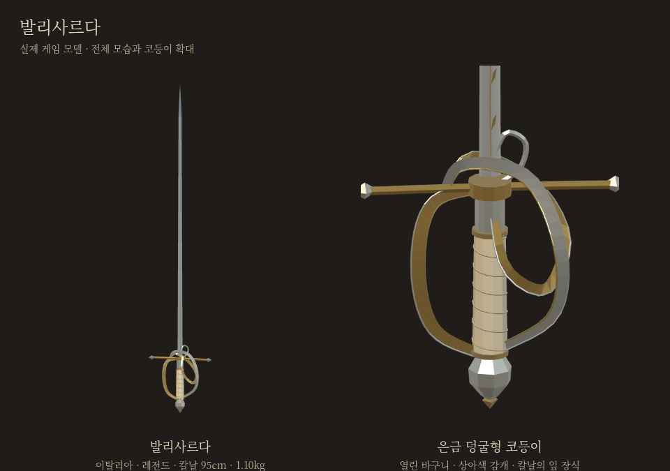
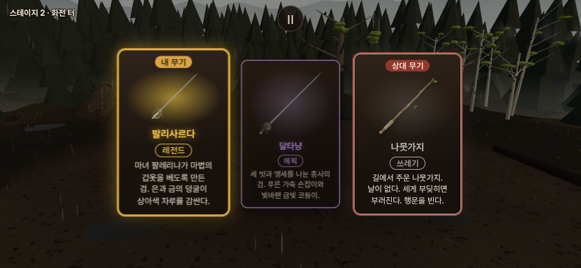
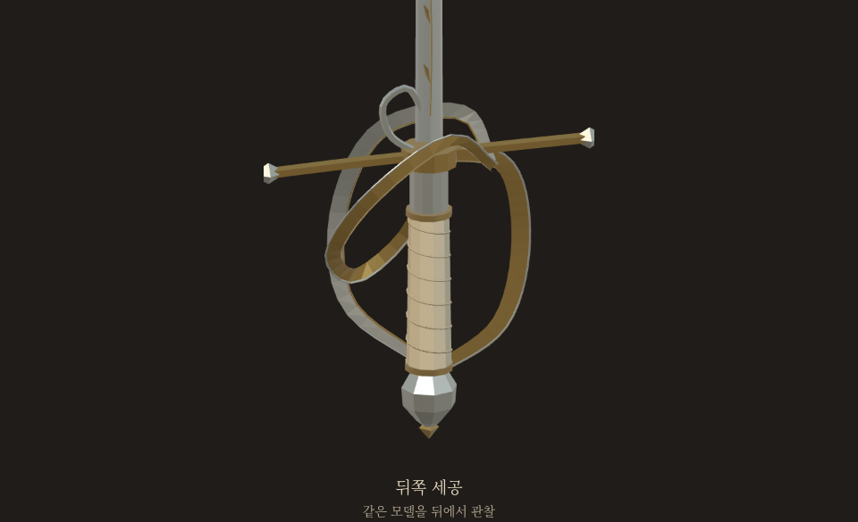

발리사르다
은과 금의 덩굴이 상아색 자루를 감싼 검.
이탈리아 · 레전드 · 칼날 95cm · 1.10kg

승인 시안을 실제 게임 모델로 제작한 관찰 화면입니다.레이피어와 같은 길이·무게·동작에 레전드 공통 공격력 보정과 은은한 기운을 적용했습니다.
무기 카드와 코등이 뒤쪽


전승과 게임 디자인
발리사르다는 이탈리아 서사시에서 마법의 갑옷을 베는 검으로 등장합니다. 은금 덩굴 장식과 이 찌르기검의 형태는 게임용 창작 디자인입니다. 현재 판정에는 별도의 방어 무시 효과가 없습니다.
halfsword-codex 포크의 별도 검토판입니다.